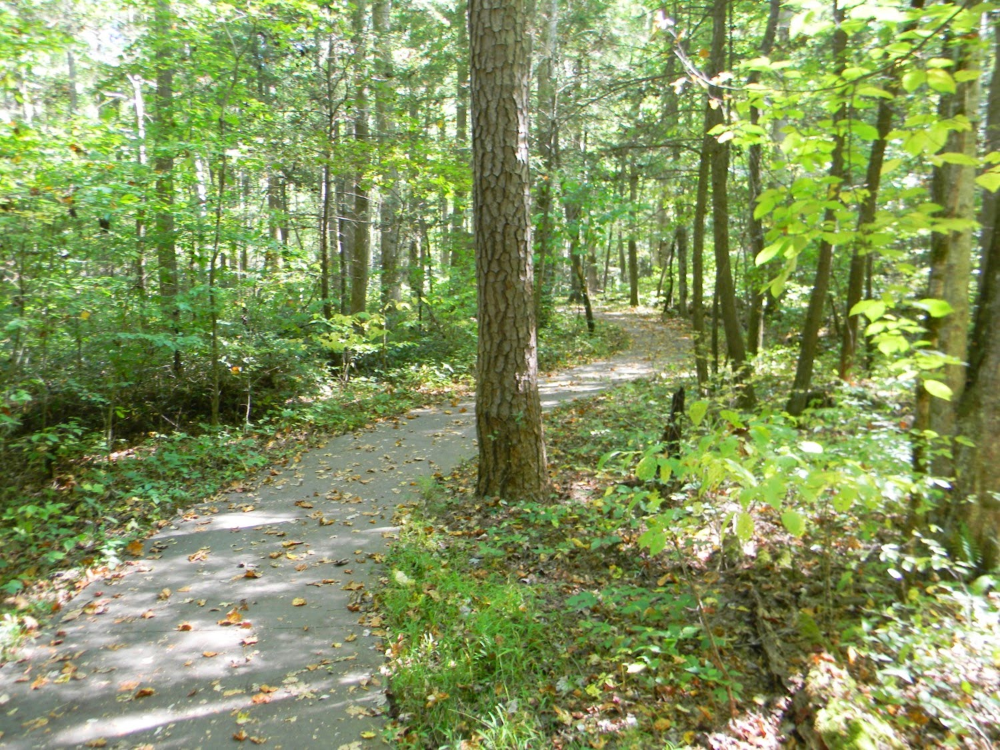

Everything you need to know about the Nature Trail
The Nature Trail is for those who like to hike, photography or people who just want to have a nice walk,
the Nature Trail is a 4 mile walk with beautiful scenery to witness such as a waterfall, a pond and some rock formations.